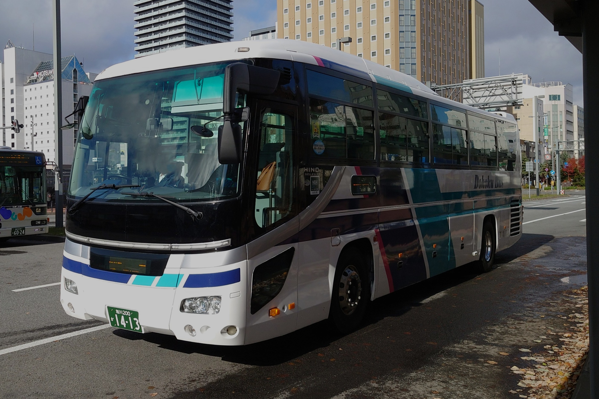

旭川200か・1413
| 車両番号 | 旭川200か・1413 |
|---|---|
| メーカー | 日野自動車 |
| 型式 | PKG-RU1ESAA |
| 車体 | JBUS |
| 年式 | 2010年 |
| 所属 | 本社 |
概要
この車は道北バスが2025年に中古で導入しました。
元は関東自動車←東野交通の車で、那須ロープウェイの広告が入っていました。
道北バスへ移籍後は札幌方面への都市間バスで使用されています。